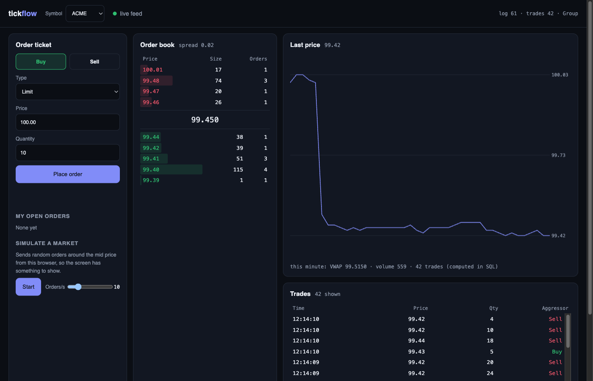

An order-matching engine that answers in microseconds and never loses an acknowledged order.
Clients send buy and sell orders over a REST API. A single-threaded engine matches them in a limit order book with price-time priority, streams every trade over a WebSocket, and stores it in SQL. Every order is written to a checksummed write-ahead log before it is applied, and clients are acknowledged only once it is on disk.
The live screen
Served by the same app at /: an order ticket, the book with depth bars, a trade tape, a price chart and the SQL VWAP, all updating over the WebSocket. Plain JavaScript, no framework. The feed reconnects with exponential backoff, and bursts of trades are throttled to one book refresh per 120 ms.

One thread owns the book
Requests queue in a bounded channel. One engine thread takes a batch, writes each command to the log, matches it, makes the whole batch durable with a single fsync, and only then answers every client in it. No locks in matching, and the log order is exactly the execution order.
Order book
Per symbol: two sorted maps (bids highest-first, asks lowest-first), a FIFO list per price level, and an id index so cancels are O(1) to find. Prices are integer ticks, never floating point.
Deterministic replay
The log stores commands, not trades. Replaying the same commands rebuilds the same book, the same order ids and the same trades, so the log is the single source of truth.
Idempotent retries
Re-sending an order with the same clientOrderId returns the original result instead of trading twice, even after a restart.
Design patterns
Single writer, command, event sourcing of commands, producer–consumer channels, observer (trade sinks), repository (SQL behind one class), idempotency keys, group commit, and retry with exponential backoff on the front end.
Backpressure
The request queue is bounded, so callers wait instead of memory growing. Each WebSocket client has its own bounded queue: a slow client drops its oldest messages and never slows the engine.
Where the time goes
Apple M2 laptop, .NET 8 Release. The engine row times each call on one thread; the end-to-end rows time 64 concurrent clients from submit to acknowledgment.
| Path | Orders | Orders/s | p50 | p99 | p99.9 |
|---|---|---|---|---|---|
| Matching engine alone | 1,000,000 | 476,367 | 0.3 µs | 2.2 µs | 6.0 µs |
| End to end, no fsync | 200,000 | 148,800 | 0.32 ms | 2.9 ms | 20.8 ms |
| End to end, group commit | 200,000 | 20,318 | 3.0 ms | 6.0 ms | 30.3 ms |
| End to end, fsync per order | 3,000 | 372 | 189 ms | 210 ms | 210 ms |
End-to-end latency is mostly queueing: with 64 orders in flight, p50 ≈ 64 ÷ throughput (Little's law). The engine's single worst call in a million (153 ms) is a garbage-collection pause.
Group commit: the same guarantee at 55× the throughput
Both power-loss-safe modes acknowledge an order only after an fsync covers it. Per-order fsync pays about 3 ms for every order; group commit pays it once per batch.
kill -9, mid-flight, ten times
python/crash_test.py starts the server, has 32 clients place orders, kills the process with SIGKILL at a random moment, restarts it, and re-sends every order the server had acknowledged. A recovered order comes back as a duplicate with its original id; a lost one would get a new id.
Half-written and corrupted log records are tested separately by damaging the file directly: replay stops at the last record whose checksum verifies, and the file is truncated there.
Per-minute bars in one query
GET /stats/{symbol} returns open, high, low, close, volume, VWAP and the buy/sell split per minute. Open and close use FIRST_VALUE window functions; the rest is GROUP BY. Trades are written to SQLite in the background, so the engine never waits for the database.
| Range (1M trades stored) | Bars | With index | Without | Speed-up |
|---|---|---|---|---|
| Last 1 hour | 60 | 16.3 ms | 82.2 ms | 5.1× |
| Full 24 hours | 1,440 | 410.9 ms | 433.6 ms | 1.1× |
The index helps selective queries. A whole day reads a tenth of the table and the window-function sort dominates; the fix there would be maintaining minute bars as trades arrive.
The Python side turns the same trade store into one-second OHLCV/VWAP bars with pandas, and a load generator drives the HTTP API: 50,000 orders from 64 clients, with the WebSocket subscriber receiving all 46,305 trades.
28 tests, run in CI on every push
Matching rules
Price and time priority, trades at the maker's price, market-order sweeps, cancels, idempotent retries, and a 20,000-step random test that the book is never left crossed.
Recovery
In every durability mode, replay rebuilds the identical book and identical trades. Torn tails and mid-file corruption are injected into the log.
HTTP end to end
The real app, hosted in-process: matching over HTTP, 400s for bad input, and a restart that restores the book without storing any trade twice.
SQL
Minute bars checked against values computed by hand, and the query plan checked to use the (symbol, time) index.
What it is not
One process and one engine thread: no replication or failover. The log and the idempotency table grow without bound; a production system would snapshot the book, trim the log and expire client ids per session. Latency numbers are from one laptop, and fsync is only as honest as the disk. Next steps: book snapshots, array-indexed price levels and pooled orders to remove GC pauses, and sharding symbols across engine threads.
Reproduce everything
dotnet test # 28 tests
dotnet run --project src/Tickflow.Api --urls http://127.0.0.1:5077
dotnet run -c Release --project bench/Tickflow.Bench -- results # latency + SQL tables
cd python && uv venv && uv pip install aiohttp pandas matplotlib
.venv/bin/python crash_test.py --rounds 10 # kill -9 test
.venv/bin/python loadgen.py --orders 50000 --clients 64 # HTTP + WebSocket
.venv/bin/python etl.py <data-dir>/trades.db # OHLCV/VWAP bars